|
Grundlagen Computernetze
Prof. Jürgen Plate |
Twisted-Pair-Verkabelung

Stecker und Buchsen
| 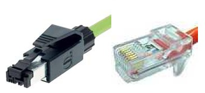 |
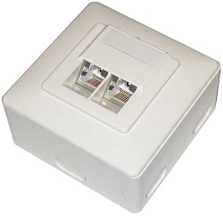 |
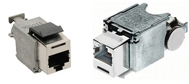 |
RJ45-Stecker zum
Aufpressen der Kabeladern
(Twisted-Pair-Stecker) |
RJ45-Einbaudose (Aufputz) |
RJ45-Buchse zum Einlöten |
Steckerbelegung und Adernfarben
Der Standard DIN EN 50173 regelt die Kabelbelegung zumindest bei
Kupferkabeln in Netzen. Es gibt vier Kabelpaare:

Blick in die Buchse
Paar 1 Pins 4, 5
Paar 2 Pins 1, 2
Paar 3 Pins 3, 6
Paar 4 Pins 7, 8
- Token Ring verwendet die Paare 1 und 3
- 10BaseT verwendet die Paare 2 und 3 (ebenso 100BaseTX)
- 100BaseT4 und VG-Anylan verwenden alle Paare
- ISDN verwendet die Paare 1 und 3
- ATM verwendet die Paare 2 und 4
- TP-PMD verwendet die Paare 2 und 4
- AS 400 verwendet das Paar 1
- IBM 3270 verwendet das Paar 2
Bei der Nummerierung wird immer von einem achtpoligen Stecker ausgegangen.
Vier- oder sechspolige Stecker verwenden die Pin-Nummern aus der Mitte.
So hat z. B. ein vierpoliger Stecker nicht die Pins1 bis 4, sondern 3 bis 6.
In der folgenden Tabelle sind einige Belegungen von achtpoligen RJ-45-Steckern
angegeben:
| Anwendung |
1 |
2 |
3 |
4 |
5 |
6 |
7 |
8 |
| 10BaseT, 100BaseTX |
Tx+ |
Tx- |
Rx+ |
|
|
Rx- |
|
|
| Gigabit-Ethernet (1000BaseT), 100BaseT4 |
D1+ |
D1- |
D2+ |
D3+ |
D3- |
D2- |
D4+ |
D4- |
| UP0, U200, U2B1Q, U* |
|
|
2a1 |
1a |
1b |
2b1 |
|
|
| Analoges Telefon, neuere Belegung (international) |
|
a2 |
W |
a |
b |
E |
b2 |
|
| Analoges Telefon, ältere Belegung (Deutschland) |
|
a2 |
a |
E |
W |
b |
b2 |
|
| ISDN S0-Bus |
|
|
2a |
1a |
1b |
2b |
|
|
| DSL-Weiche |
|
|
|
1a |
1b |
|
|
|
1 Optional für externe Stromversorgung
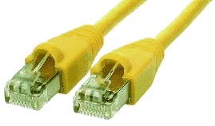
Pin-Numerierung von Stecker und Kabel
Für den IP65/67-Bereich in der Industrie kommen keine RJ-45-Stecker zum Einsatz,
sondern es werden 4-polige M12-Steckverbinder mit D-Codierung verwendet. An diese
Stecker kann die Profinet-AWG22-Leitung angeschlossen werden. Der Stecker ist
abgeschirmt und für den rauhen Insustrieeinsatz ausgelegt.
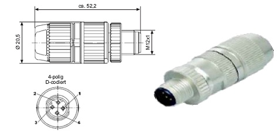
Adernfarben
Hier gibt es zwei Belegungen (die aber bis auf die Farben zum gleichen Ergebnis führen).
Man muß sich nur an einen der beiden Standards halten, damit man nicht durcheinander
gerät. Normales 100BaseT- und 10BaseT-Kabel kommt mit den Adern an den Pins 1, 2, 3
und 6 aus. Die Pins 4, 5, 7 und 8 werden für 100BaseT4+ benötigt.
Standard EIA/TIA-T568A-Belegung:
| Pin | Farbe |
|---|
| 1 | Weiß/Grün |
| 2 | Grün |
| 3 | Weiß/Orange |
| 4 | Blau |
| 5 | Weiß/Blau |
| 6 | Orange |
| 7 | Weiß/Braun |
| 8 | Braun |
|
Standard EIA/TIA-T568B-Belegung:
(Diese scheint die verbreitetste zu sein.)
| Pin | Farbe |
|---|
| 1 | Weiß/Orange |
| 2 | Orange |
| 3 | Weiß/Grün |
| 4 | Blau |
| 5 | Weiß/Blau |
| 6 | Grün |
| 7 | Weiß/Braun |
| 8 | Braun |
|
M12-Belegung:
(Profinet-Kabelfarben)
| Pin | Farbe |
|---|
| 1 (TD+) | Gelb |
| 2 (RD+) | Weiß |
| 3 (TD-) | Orange |
| | |
| | |
| 4 (RD-) | Blau |
| | |
| | |
|
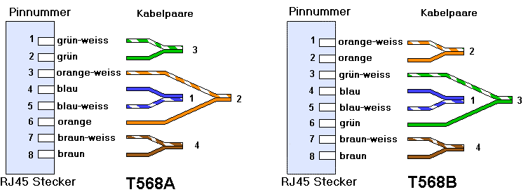
Die Belegung ist grundsätzlich eins zu eins an beiden Steckern.
Auf Dosen ist die Belegung aufgedruckt (bzw. die LSA-Klemmen sind einfach in
der entsprechenden Farbe markiert). Die Kabelfarben kennzeichnen die verdrillten
Adernpaare, die Paare müssen eingehalten werden.
Crossoverkabel
Crossoverkabel dienen zur Verbindung zweier Hubs. Auf diese Weise kann man die
Zahl der verfügbaren Rechneranschlüsse erhöhen. Beachten Sie aber,
daß sich nur eine begrenzte Zahl von Hubs kaskadieren lassen.
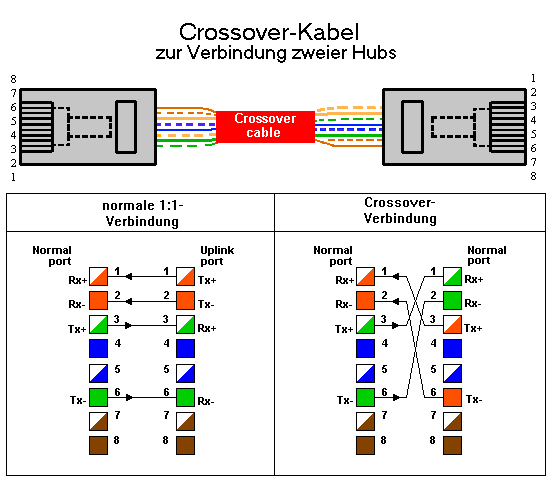
Anschlußbelegung der Twisted-Pair-Unterputz-Kanaleinbaudose
In der Regel wird das Fabrikat Telegärtner MJ45 LFS 8/8 verwendet.
Die Darstellung zeigt die Draufsicht (anschlusseitig) der Dose. Die obere
Klemmenreihe ist für die linke Dose, die untere Klemmenreihe für
die rechte Dose. Beim Standardnetz sind nur vier Kabeladern pro Dose
anzuschliessen (Pins 1,2, 3 und 6, siehe oben).
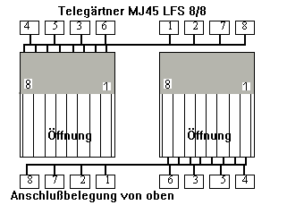
Anschlußbelegung der Twisted-Pair-Stecker für Hub und Computer
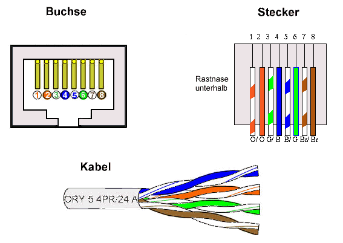
Cable-Sharing, Y-Kabel
Y-Kabel sind spezielle Kabel, mit denen man ein voll ausgebautes RJ-45-Kabel, bei
dem alle 4 Paare des Kabels angeschlossen sind, als Verbindungsleitung
für zwei Endgeräte benutzen kann. Sinn des Ganzen ist, daß man nur
ein Twisted-Pair-Kabel mit 8 Adern verlegen muß, um zwei Computer (oder andere
Geräte) anschließen zu können (jedenfalls bei niedrigeren
Übertagungsraten).
An Ihrem Hub belegen Sie zwei Ports, die dann per Y-Kabel auf ein Kabel geleitet
werden, das zu einem Verteilungspunkt (Dose im Büro) verlegt ist. Von dort
wird mit einem weiteren Y-Kabel zu Ihren Endgeräten verteilen.
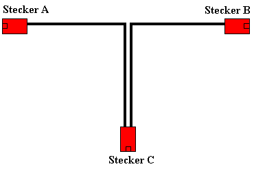
Schema der Verbindung:
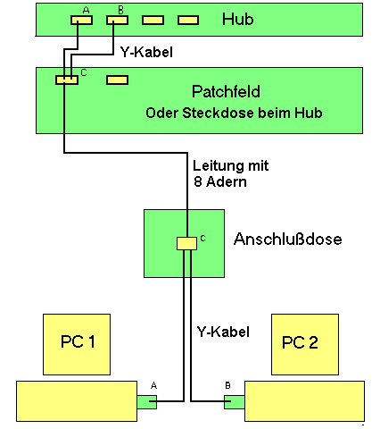
Für die verschiedenen Sprach- und Datendienste sind in den internationalen
Richtlinien unterschiedliche Buchsenkontaktbelegungen festgelegt worden. Damit die
Signalleitungen an den richtigen Kontakten der Endgeräte angelegt sind, wurden
für Y-Kabel (Cable Sharing Adapter) verschiedene Ausführungen entwickelt:
- mit Kontaktbelegung 1, 2, 3, 6 (Ethernet usw.)
- mit Kontaktbelegung 3, 6, 4, 5 (Token Ring, Telefonanschluss, ISDN)
Es gibt auch fertige Adapter im Handel zu kaufen:
 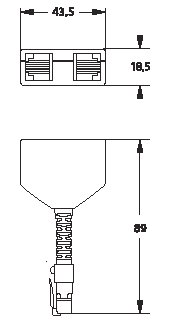
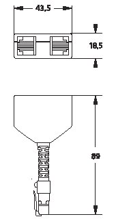
Der Cable-Sharing-Adapter wird immer paarweise eingesetzt. Auf der einen Seite
am Verteiler, um die beiden Dienste auf die Installationsleitung aufzuschalten und auf
der anderen Seite (z. B. an der Dose), um die Dienste vom 8-adrigen Anschluss wieder
abzugreifen. Durch die flexible Anschlußschnur wird eine gute Verteilung der
Zugkräfte erreicht, die von der Anschlußschnur der Endgeräte bzw. von
den Patchkabeln auf den Adapter einwirken.
Verdrahtung des Kabels:
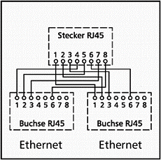
Verteiler für 2 Ethernet-Anschlüsse
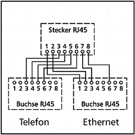
Verteiler für Ethernet- und Telefon-Anschluß
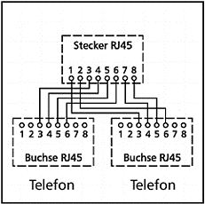
Verteiler für 2 Telefon-Anschlüsse
100Base-T4 und 1000BaseT
100Base-T4 und 1000BaseT nutzen im Gegensatz zu 10BaseT alle 4 Adernpaare. Die
Steckerbelegung ist dann:
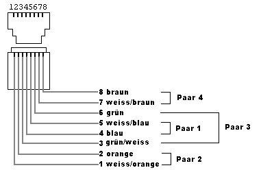
Das Crossover-Kabel wird folgendermaßen verdrahtet:
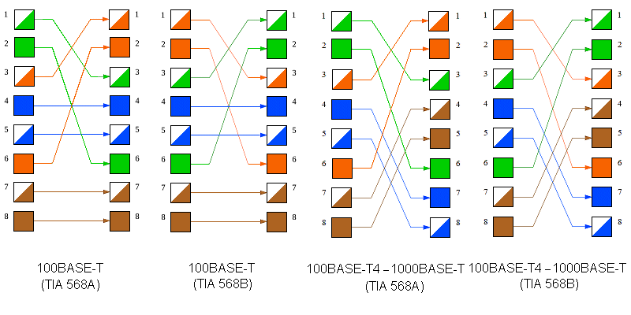
Mir wurde zugetragen, dass zumindest manche Kabeltester die Polarität der
gekreuzten D3- und D4-Leitungen (4,5 mit 7,8) bemängeln. Nach allen meinen
Quellen sollte Pin 4 mit Pin 7 und Pin 5 mit Pin 8 verbunden sein, der
Tester meint aber, man solle Pin 4 mit Pin 8 und Pin 5 mit Pin 7 verbinden.
Leider ist es mir bisher nicht gelungen, das Mysterium zu klären.
RJ-45-Stecker crimpen
 |
Zuerst sollten Sie alles Benötigte bereitlegen. Für eine TP-Verbindung
braucht man das Kabel, zwei Knickschutzhüllen, zwei Crimpstecker, eine Crimpzange,
ein scharfes Messer, einen Schraubenzieher und eine Kabelschere oder einen
Seitenschneider. |
| Schieben Sie die Knickschutzhülle auf das Kabel. Dann entfernen
Sie ca. 2 cm der Isolierung. Oft ist an der Crimpzange ein entsprechendes Werkzeug vorhanden.
Achten Sie darauf, die Abschirmung und die Adern nicht zu verletzen.
Dazu noch ein Tipp von Thomas Schmieder:
Die Knickschutzhülle wird ja gerne vergessen. Aber manchmal (oder eigentlich meistens)
klappt das Aufschieben nicht, da das Material des Kabels und das der Hülle so aneinander
kleben, dass man eher einen Kopfstand auf der Wasseroberfläche hinbekommt, als die Tülle
aufzuschieben. Ein winziges Tröpfchen Speiseöl hat mir schon oft die Show gerettet.
Natürlich tut's auch etwas Vaseline oder ein anderes Gleitmittel...
|  |
 |
Nun öffnen Sie vorsichtig die Abschirmfolie und klappen Sie diese
nach hinten. Danach ordnet man die Kabelpaare parallel entsprechend der Adernbelegung
nebeneinander an.
Halten Sie die Kabel etwa 10 mm von der Isolierung entfernt parallel
fest und schneiden Sie alle Adern ca. 4 mm vor den Fingern ab. Ab da sollten Sie
die Adern weiter festhalten. Die Länge der freiliegenden isolierten Adern muß
zwischen 10 mm und 14 mm liegen. Manche Steckertypen haben einen kleinen,
rechteckigen Plastikschlitten als Montagehilfe beiliegen. In diesem Fall werden
die Kabel zuerst in den Schlitten eingeschoben und danach abgeschnitten.
Der Schlitten hat einen Nachteil: Manchmal kann man nicht erkennen, ob
er tief genug im Stecker sitzt (dann gibt es keinen Kontakt beim abschließenden
Crimpen). Wenn man den Plastikschlitten mit schwarzem Filzer am Rand einfärbt,
kann man seine Lage leichter erkennen und sie gegebenenfalls korrigieren, indem
man ihn mit Pinzette oder Schraubendreher tiefer in den Stecker schiebt.
|
Schieben Sie die Kabel in den RJ45-Stecker (das Steckersichtfenster zeigt nach
oben), und zwar solange, bis die Kabel bündig am Steckerabschluß sitzen.
Sollte sich beim hineinschieben eine Ader verkanten, alles nochmal herausziehen
und neu versuchen. Bei der Schlittenvariante führen Sie den Schlitten mit den
Adern in den Stecker ein und stellen Sie sicher, daß alle Adern bis nach ganz
vorne durchgeschoben werden.
Beim nicht abgeschirmten Stecker: Während Sie Kabel und Stecker mit der einen
Hand festhalten, schieben Sie mit dem Schraubenzieher die Abschirmung vorsichtig
rechts und links neben die Adern in den Stecker (nicht zu tief).
Damit wird ein stabilerer Sitz des Steckers und eine optimale Verbindung zwischen
der Stecker- und Kabelmasse erreicht. Die einzelnen Adern müssen erkennbar sein,
wenn man von vorne auf den Stecker schaut. |
 |
 |
Der Stecker wird vorsichtig in die Crimpzange eingeführt (er paßt nur in einer
Richtung) und bis zum Anschlag hineingeschoben. Jetzt pressen Sie die Crimpzange
einmal kräftig zusammen (soweit es geht), lösen sie wieder und ziehen den Stecker
heraus. Beim nicht-abgeschirmten Stecker schieben Sie noch die Knickschutzhülle
auf den Stecker.
Nun sind die Litzen des Kabels fest mit dem Stecker verpreßt und gleichzeitig
die Isolierung aufgetrennt worden - wie die folgende Schemazeichnung zeigt.

|
| Beim abgeschirmten Stecker werden die beiden Metallzungen der Abschirmung
mit einer Flachzange vorsichtig um das Kabel herumgebogen und festgedrückt. Achten
Sie auf guten Kontakt mit der Abschirmung des Kabels. Dann kann auch hier die
Knickschutzhülle aufgeschoben werden.
|
 |
 |
Das Kabel sollte jetzt fertig sein und man kann es testen. Das fertige Kabel
wird mit einem Kabeltester überprüft, indem auf die eine Seite der entsprechende
Adapter aufgesteckt und das andere Kabelende in den Tester gesteckt wird. Zur
Not reicht auch ein Durchgangsprüfer.
|
Auflegen der Kabel am Patchfeld/an der Dose
In der Regel werden bei den Dosen zwei Varianten verwendet, entweder mit herkömmlichen
Schraubklemmen oder mit LSA-Klemmen. Zur Schraubklemmen-Variante ist nicht viel zu sagen.
Die Kabel werden abisoliert und die Abschirmung zurückgeschlagen. Anschließend wird
auch die Isolierung der einzelnen Adern auf ca. 5 mm Länge entfernt und jede Ader einzeln
in die Klemme eingeführt und verschraubt.
"LSA" steht für "löt-, schraub- und abisolierfrei". Bei diesem Verbindungsverfahren
wird zum Auflegen ein spezielles Werkzeug verwendet.


Mit dem LSA-Auflegewerkzeug werden die einzelnen Adern an der Dose oder am
Patchpanel aufgelegt. Damit wird jede Ader in einen Schlitz gequetscht
und das überstehende Ende abgeschnitten. So kann eine Dose zuverlässig
in wenigen Minuten angeschlossen werden.
Kabel beschädigt
Beschädigungen an Netzwerkkabeln können viele Ursachen haben: Anwender
rollen achtlos mit Bürostühlen über Leitungen, treten auf Kabel oder
stellen Schränke darauf ab.
Welche Folgen sich daraus ergeben hängt neben dem Grad der Beschädigung
(Quetschung, Kurzschluß, Unterbrechung) von der verwendeten Netzwerkstruktur
ab. Die schlimmsten Folgen ergaben sich bei den alten Bus-Netzen. Hier waren
immer alle Rechner im Segment von der Störung betroffen. Bei den heutigen
Sternstrukturen sieht die Situation günstiger aus. Nur die angeschlossene
Station wird durch das beschädigte Kabel beeinflußt. Aber auch hier
gibt es Ausnahmen: Handelt es sich bei der defekten Leitung um ein Link-Kabel
zwischen zwei Hubs/Switches, können die Auswirkungen auch ganze
Rechnerverbünde treffen.
"Mechanische" Beschädigung einer Leitung führt immer zu einer Änderung
der elektrischen Parameter. Der für Netzwerke wichtigste ist die Impedanz.
Mit der Impedanz in direktem Zusammenhang steht der im Kabel auftretende
Reflexionsfaktor (siehe Kapitel 7). An der Störstelle
wird ein Teil (Quetschung) oder das komplette Signal reflektiert (Leerlauf
und Kurzschluß). Die typischen Symptome von beschädigten Leitungen sind Verlangsamung
oder Teilausfall des Datenverkehrs bei Quetschung des Kabels und Totalausfall
des betroffenen Segmentes bei Leerlauf oder Kurzschluß.
Schwieriger wird es mit Quetschungen. Weder ein einfaches Multimeter
noch der Längenmesser helfen hier weiter. Bei sehr kleinen Netzen
und ohne spezielle Meßgeräte hilft hier wieder nur die Sichtkontrolle.
Wer über einen Kabel-Scanner verfügt, kann die Impedanz oder
den Reflexionsfaktor der Leitung nachmessen.
Wichtig ist im Zusammenhang mit Quetschungen folgende Tatsache:
Die Auswirkungen müssen sich nicht "sofort" zeigen. Hängen
nur wenige Stationen im Netz oder herrscht nur geringer Datenverkehr,
dann treten zwar mehr Kollisionen auf als in einem unbeschädigten Segment,
sie sind aber nicht als Verlangsamung des Netzes spürbar.
Erst wenn sich der Datenverkehr
erhöht oder die Anzahl der Stationen vergrößert wird, macht sich die Störung
bemerkbar. Solche "schleichenden" Fehler lassen sich mit künstlicher Erhöhung
der Netzwerkauslastung durch Dumb-Loads finden.
Fehlerhafte Stecker
Egal ob selbst "gekrimpte" oder fertig konfektionierte Kabel
verwendet werden: Fehler an den Steckern gehören in der "Netzwerkwelt"
häufig zu den Störungsursachen. Im Gegensatz zur Beschädigung der Leitung
sind sie allerdings meist nicht durch eine kurze Sichtkontrolle zu finden.
Bei der Beschreibung der Fehlerquellen muß man zwischen der Herstellung
und der Verwendung der Verbindungskabel unterscheiden. Zunächst zur Herstellung:
Stecker/Leitungsverbindungen werden meist mit Hilfe vom Krimp-Werkzeugen
hergestellt.
Bei Twisted-Pair-Leitungen ist besonders auf den guten Sitz der einzelnen
Kabel in den Kontaktklemmen zu achten. Immerhin gilt es, bis zu acht Leitungen
im Stecker unterzubringen. Häufig werden beim Zusammenquetschen der Stecker
falsch verlegte Adern gegeneinander kurzgeschlossen. Ein neu gekrimptes
Kabel sollte auf jeden Fall einem Verdrahtungstest unterzogen werden.
Die Verdrillung der einzelnen Adrenpaare sollte erst möglichst kurz vor
dem Stecker aufgehoben werden, um die Auswirkung von Nahnebensprechen
(NEXT) klein zu halten.
Generell gilt für das Anfertigen von Steckverbindungen: Vorher üben!
Um die Bedienung der Krimpzange zu erlernen, sollte man auf jeden
Fall einige "Probeverbindungen" anfertigen. Die so gewonnene Routine
zahlt sich in der Praxis aus.
Bei Twisted-Pair-Leitungen fällt die Sichtprüfung leicht aus, da
die meisten Stecker ein Klarsichgehäuse haben. In der Praxis werden
oft einzelne Adern durch Zugbelastung abgetrennt. Auch die dünnen Rastnasen
der Stecker werden häufig auf diese Weise abgebrochen. Ohne sie sitzen
Steckverbindungen unter Umständen nur locker in der zugehörigen Buchse
(Wanddose, Netzwerkadapter oder ähnliches). Wackelkontakte sind die Folge.
Abgetrennte Adern findet man am leichtesten mit einem Verdrahtungsprüfer.
Kabel mit abgebrochenen Rastnasen sollten grundsätzlich ausgetauscht werden.
Maximallänge des Segmentes überschritten
Zu den häufigsten Fehlern bei der Installation und Erweiterung
von Netzen gehört die unzulässige Überschreitung der Segment-Maximallänge.
Netze entstehen in aller Regel schrittweise.
Gerade in kleineren Unternehmen werden zu Anfang oft nur einige
wenige Rechner vernetzt. Hat sich die Netzwerktechnik mit ihren vielen
Vorteilen erst einmal etabliert, beginnt der Ausbau der Verkabelungsstruktur.
Nach und nach werden immer mehr Rechner an den Strang angeschlossen.
Die wenigsten Administratoren machen sich in einem solchen Stadium
des Netzausbaus Gedanken über die Kabellänge. Erst wenn das Netz
beginnt, langsamer als gewöhlich zu werden, wird mit der Fehlersuche
begonnen. Oftmals wird dann ein leistungsfähigerer Server gekauft,
der aber keinerlei Verbesserung bringt. In anderen Fällen überschreiten
Netzwerkverantwortliche wissentlich die zugelassene Länge, mit
dem Argument: "Das Netz geht doch noch!" Tatsächlich mag das Netz
noch ohne erkennbare Probleme funktionieren, allerdings nur bei der
aktuelle Auslastung. Wird die Netzlast größer, bricht plötzlich
die Kommunikation zusammen.
Die Funktion von CSMA/CD-Netzen beruht auf der Einhaltung von Maximallaufzeiten.
Wird ein Segment über seine zugelassene Länge hinaus erweitert,
dann können Kollisionen nicht mehr zuverlässig erkannt werden.
Das Auftreten einer Kollision ist abhängig von der aktuellen
Netzlast. Will nur eine Station im ganzen Segment senden, kann
kein Zusammenstoß von Paketen entstehen. Wollen aber viele
Stationen im gleichen Zeitraum Daten verschicken, dann ist eine
Kollision sehr wahrscheinlich. Die Aussage: "Das Netz geht zum
Zeitpunkt X." sagt also nichts über den Zustand zur Zeit Y.
Für die Bestimmung der Länge des Segmentes ist ein spezialisiertes
Längenmeßgerät notwendig.
Es ist ratsam, jedes verlegte Kabel-Segment zu vermessen und
an wenigstens einer Seite mit einer Beschriftungsfahne zu versehen.
Das Etikett sollte neben der Bestimmung des Stranges (zum Beispiel:
"1. OG/West") auch die gemessene Kabellänge ausweisen. So kann
bei einer anstehenden Erweiterung sofort entschieden werden, ob
das Segment noch verlängert werden darf. Reicht die zur Verfügung
stehende Länge nicht mehr aus, dann muß das Segment zum Bespiel
über einen Switch in zwei Teilstücke getrennt werden.
In der Praxis sollte man die geforderte Maximallänge um einen gewissen
Prozentsatz unterschreiten. Dies gilt insbesondere, wenn
Netzwerkkarten verschiedener Hersteller eingesetzt werden.
Verschiedene Kabelkategorien gemischt
Bei Twisted-Pair-Verkabelungen ist die Gefahr recht groß, verschiedene
Kabelkategorien (zum Beispiel 3 und 5) versehentlich zu mischen.
Solange das Netz nur mit 10 MBit/s lief, bereitete diese Situation
keine Probleme. Erst wenn auf schnellere Technologien umgestiegen
wurde, treten Fehler auf. Eines oder mehrere der verwendeten Kabel
sind für die gewählte Geschwindigkeit nicht geeignet,
obwohl die restlichen die Spezifikation einhalten. Liegen die Leitungen
teilweise in Kabelkanälen, fällt die Ortung des falschen Kabels
schwer. Mit einem "Cable-Scanner", der die TSB67 erfüllt, kann der
komplette Link vor dem Umstieg auf eine schnellere Technologie geprüft
werden.
Routereinträge
Ist ein IP-Netz in Subnetze unterteilt (zum Beispiel Class-C-Netze)
dann kommmunizieren sie über Router miteinander. Jeder Rechner im Netz
muß dazu einen Eintrag in einer Konfigurationsdatei besitzen, der
ihm mitteilt, welche Adresse der Router-Rechner hat. Insbesondere bei
PC-Software herrscht allerdings eine gewisse "Namensverwirrung".
Hier werden Routereinträge oft als "Gateway" oder "Default-Gateway"
angegeben.
Fehlende oder falsche Routereinträge findet man relativ leicht mit folgender
Methode: Zuerst wird ein einfacher Verbindungstest zu einem Rechner
im eigenen Subnetz durchgeführt. Wenn dies erfolgreich war, wird der
Test mit einem Rechner außerhalb des eigenen Netzes wiederholt.
Funktioniert das nicht sollte man einen Blick auf die
Router-Konfigurations-Einträge des aktuellen Rechners werfen.
Falsche IP-Nummer
Oft tritt nach der Verlegung von Rechnern in andere Gebäude folgender
Fehler auf: Obwohl an der Konfigurations des Rechners nichts verändert
wurde, kann über IP keine andere Maschine mehr angesprochen werden.
Ähnlich verhält es sich mit Notebooks oder Laptops, die an verschiedenen
Orten mit dem Netz verbunden werden. Die Lösung ist meist recht einfach:
Beide Gebäude liegen innerhalb verschiedener IP-Subnetze. Dazu ein Beispiel:
Das Notebook wichtel mit der IP-Nummer 129.177.206.99
ist für das Class-C-Netz 129.177.206.0 konfiguriert. Sein
"Default-Router-Eintrag" lautet 129.177.206.254. Dieser
Computer wird nun im Subnetz 129.177.106.0 (ebenfalls Class-C)
an eine Netzwerkdose angeschlossen und nichts an der Konfiguration geändert.
Sendet wichtel nun Pakete an Rechner mit der IP-Nummer 129.177.206.x
dann werden sie von der Netzwerksoftware mit der Netzmaske (129.177.206.0)
oder der Broadcastmaske (129.177.206.255) verglichen.
Ergebnis des Vergleichs: es muß sich um einen lokalen Rechner handeln
(gleiches Subnetz). Folglich schickt wichtel das Paket direkt,
ohne den Standard-Router anzusprechen. Da sich der Rechner aber nicht
mehr im Netz 129.177.206.0) befindet, kann der Empfänger nicht erreicht
werden. Ähnlich verhält es sich, wenn wichtel versuchen würde
mit einem Computer außerhalb von 129.177.206.0 zu kommunizieren.
Dieses Paket würde zur Weiterleitung an den Standard-Router geschickt
werden, den wichtel unter der Adresse 129.177.206.254
anspricht. Auch dieses Paket wird als "lokal" verschickt
und kann damit den Empfänger nicht erreichen.
Gegen das Problem "falsche IP-Nummer durch Standortwechsel" läßt
sich bereits im Vorfeld einiges unternehmen:
- Sind alle Rechner mit einem Aufkleber ausgestattet, der den Namen,
die IP-Nummer und eventuell auch die Ethernet-Adresse ausweist, dann
läßt sich mit einem Blick klären, ob der Rechner nach einem
Umzug neu konfiguriert werden muß.
- Anwender sollten auf alle Fälle darüber aufgeklärt werden, daß man
nicht einen Rechner, der für Gebäude A konfiguriert ist, mit
in Gebäude B nehmen kann, ohne etwas an der Konfiguration zu ändern.
- Insbesondere bei Laptops und Notebooks, deren Hauptzweck der Einsatz
an verschiedenen Orten ist, ist die Einrichtung einer dynamischen
IP-Konfiguration in jedem Subnetz sinnvoll (DHCP).Die Rechner erhalten
dann keine feste IP-Nummer mehr, sondern holen sich die Nummer und die
Konfiguration (Netzmaske, Broadcast und Router-Adresse) erst beim Start
der Netzwerksoftware von einem DHCP-Server.
Fehlersuchstrategien
Neben den o. g. Fehlern können natürlich noch diverse andere Probleme
auftreten - angefangen beim Putzdienst, der den Netzstecker vom Server
abzieht bis hin zum Telekom-Mitarbeiter, der bein Einziehen einer
neuen Glasfaser die vorhandenen anderen Verbindungen schrottet. Es können
eben auch in einem korrekt geplanten und installierten Netzwerk Fehler
auftreten. Viele Administratoren neigen dazu, bei einer Störung
relativ unkoordiniert einzelne Konfigurationen zu überprüfen. Oft
werden dabei völlig ungeeignete Suchstrategien angewendet, wodurch die
Zeit bis zur Lösung des Problems unnötig verlängert wird. Eine effiziente
und schnelle Fehlersuche ist nur möglich, wenn geeignete Testverfahren
verwendet werden.
Nachdem die Anzahl der Fehler, die in Netzwerken auftreten können, unüberschaubar
hoch ist, kann hier nicht auf Details bestimmter Konfigurationen
eingegangen werden. Der nachfolgende Abschnitt beschreibt daher allgemein
ein sinnvolles Vorgehen bei Netzwerkproblemen. Den Ausgangspunkt bilden
Fehler, die sich direkt an den Stationen
auswirken (Fehlermeldungen der Treiber, usw.). Im Netzwerkalltag
ist das die sicherlich häufigste Ausgangs-Situation: Ein Anwender stellt
fest, daß eine bestimmte Netzwerkfunktion nicht zur Verfügung
steht und benachrichtigt den Netzwerkverwalter. Fehler an Koppelelementen
wie Bridges und Routern werden ausgehend von den Fehlermeldungen der Stationen
im Lauf der beschriebenen Tests ermittelt.
Die wohl wichtigste Regel bei der Fehlersuche ist: "Ruhig bleiben!".
Auch wenn der betroffene Rechner noch so wichtig ist, eine hektische
Suchaktion führt nur selten zum Erfolg.
Wird man als Netzverwalter von einem Anwender angerufen und muß
am Telefon Hilfestellung leisten, dann sollte man sich
die entsprechenden Fehler-Meldungen "Wort für Wort" vorlesen lassen.
Durch die teilweise recht ungenauen Beschreibungen der Benutzer
("Das Internet geht nicht!", "Es druckt nicht!" oder "Ich komme nicht ans Netz!")
gerät man sonst oft auf eine völlig falsche "Fährte". Der Administrator muß
zunächst mit der Abgrenzung des Fehlerumfanges beginnen. Dazu gehört die
Feststellung, ob nur eine Station oder mehrere Stationen betroffen sind.
Client-Fehler
Die Suche nach Client-Fehlern beginnt sinnvollerweise zunächst mit einer
Befragung des Anwenders der Station. Oft verändern Benutzer unabsichtlich
Konfigurationsdateien oder löschen für die Netzwerkfunktionen wichtige Dateien.
Ein der Standardfragen sollte also lauten: "Ist an diesem Rechner irgend etwas
geändert worden?". Auch wenn die Antwort ein "nein"
ist, lohnt sich meist ein genaueres "Nachhaken" mit Fragen wie
"Haben Sie ein neues Programm installiert?". Oft gelangt man mit
dieser Methode schneller zum Ziel, als mit diversen Testprogrammen.
Bei allen Antworten sollte allerdings ein wichtiger psychologischer
Faktor nicht außer Acht gelassen werden: Viele Anwender verschweigen
ihre Änderungen an der Rechnerkonfiguration aus Angst, für den Fehler
verantwortlich gemacht zu werden. Die meisten erfahrenen Netzwerkverwalter
haben schon einmal Situationen erlebt, in denen Benutzer beteuerten
nichts am Rechner verändert zu haben, obwohl auf der Station zum Beispiel
ein neues, völlig anderes Betriebssystem installiert wurde.
Diesem Phänomen kann man nur begegnen,
indem man alle "Netz-Nutzer" darüber aufklärt, daß das Interesse
eines Administrators ausschließlich in der Funktionsfähigkeit
des Netzwerkes und nicht in der Bestrafung von "Schuldigen" besteht.
Vor dem Einsatz von Software für den Stationstest sollte man einen
Blick auf das Netzwerkkabel des Rechners werfen. Werden bei
Twisted-Pair-Verkabelungen Hubs mit je einer "Online-LED" pro Port verwendet,
genügt für eine grobe Überprüfung zunächst das Betrachten dieser Anzeige.
Leuchtet die Diode, dann ist das Kabel
zumindest nicht kurzgeschlossen oder aufgetrennt.
Leuchtet die LED nicht, dann kommt als Ursache das Kabel oder das
Netzwerkinterface
der Station in Frage. Ersteres läßt sich durch den Austausch der Leitung gegen
eine andere ausschließen.
Ist trotz aktiver LED kein Netzwerkzugriff möglich, dann muß die Überprüfung
der Station mit dem Einsatz von Software fortgesetzt werden. Die einfachste
Testmöglichkeit ergibt sich auf PCs.
Man bootet den Rechner mit einer vorbereiteten Boot-CD/DVD (z. B. mit "Knoppix",
einem Linux-Derivat).Hier kann das Netz schnell passend von Hand konfiguriert
werden. Ist auch unter diesen "Minimal-Bedingungen" kein
Netzwerkbetrieb möglich, ist ein Hardwarefehler zu vermuten.
Server-Fehler
Für die Suche nach einem Serverfehler ist zunächst einmal interessant, ob
der entsprechende Rechner in einem lokalen, nahen (gleiches Gebäude wie die
zugreifenden Stationen) oder
in einem unzugänglichen, weit entfernten Segment steht (zum Beispiel
in einem anderen Gebäude oder einer anderen Stadt). Lokale Server
sollten vom Administrator direkt inspiziert werden. Meist erweist
sich ein "ausgeschalteter" oder vom Netzkabel getrennter Server
als Ursache. Kann bei dieser Überprüfung kein Fehler gefunden werden,
dann sollte die einwandfreie Funktion des Netzwerkinterfaces im Server
getestet werden. Dies ist bei fast allen Betriebssystemen durch
die Ausgaben diverser Hilfs-Programme möglich. Um die zwischen der zugreifenden Station
und dem Server-Rechner liegende Verkabelungsstruktur als Fehlerquelle
auszuschließen, führt man sinnvollerweise
einen erweiterten Verbindungstest zwischen beiden durch.
Auf diese Weise erhält man detailierte Informationen über den
Weg jedes Datenpaketes. Im Falle eines weit entfernten Rechners
ist das oft die einzige Testmöglichkeit.
Konfigurations-Fehler
Konfigurations-Fehler treten in Netzen hauptsächlich nach
der Neuinstallation an Stationen oder Servern auf. Hierbei
handelt es sich um grundsätzliche Fehler in den Soft- oder
Hardware-Einstellungen der Rechner. In einigen Fällen bleiben
die Netzwerkprobleme vorerst unentdeckt, weil die betroffenen
Netzwerkdienste zunächst nicht genutzt werden. Da die Bandbreite
der möglichen Fehler sehr groß ist und natürlich vom jeweiligen
Betriebs- und Netzwerksystem abhängt, kann hier keine allgemeingültige
Fehler-Strategie angegeben werden. In der Praxis kommt der Administrator
dabei nicht um eine genaue Überprüfung der einzelnen Konfigurations-Dateien
der Rechner herum.
Netzwerk-Fehler
Wie bereits oben beschrieben, können in Netzwerken
eine ganze Reihe von "Hardware-Fehlern" auftreten. Eine schnelle Bestimmung
der Ursache ist nur mit dem Einsatz von Meßgeräten möglich.
Vor dem Einsatz von Cable-Scannern oder ähnlichem sollte zunächst
die Anzahl der betroffenen Segmente bestimmt werden. Über den Vergleich
mit dem Netzwerkplan, den jeder Verwalter angelegt haben sollte,
können sinnvolle Meßpunkte ausgewählt werden.
In kleinen Netzen, bei denen der Administrator
oft ohne entsprechende Meßgeräte auskommen muß, kann folgende Strategie angewendet
werden, um den Fehler zumindest grob einzukreisen:
Die Fehlersuche beginnt mit dem Betrachten der Status-, Activity und
Collision-Anzeigen der eingesetzten Koppelelemente (Hubs, Repeater, Switches,
usw.). In den meisten Fällen läßt sich damit das betroffene Netz-Teilstück
ermitteln. Bei Bus-Netzen kann der Fehler über ein
"Trial-and-Error-"Verfahren bestimmt werden. Dazu wird der Bus
aufgetrennt und damit in Teilnetze zerlegt. Jeder Teil wird mit Hilfe
eines zusätzlichen Widerstandes elektrisch abgeschlossen. In den beiden
so entstandenen Einzel-Segmenten können Verbindungstests
ausgeführt werden. Zum dem fehlerfreien
Teilstück wird nun schrittweise ein Abschnitt des anderen Segmentes hinzugefügt
und der Verbindungstest erneut ausgeführt, bis der Fehler auftritt.
Auch wenn dieses Verfahren nicht bei allen möglichen Hardwarefehlern
zum Erfolg führt, können damit zumindest die häufigsten Probleme ermittelt
werden.
Aktives Netzwerkmanagement
Der hohe Hardware-Anteil an der Gesamtfehler-Häufigkeit von Netzwerken
entsteht nicht etwa, weil die eingesetzten Komponenten unzuverlässig sind,
sondern vielmehr durch prinzipielle Fehler bei Planung und Erweiterung der
Kommunikationsstrukturen. Auch heute noch bestehen viele Netze
bei der Erstinstallation aus nur wenigen Stationen.
In dem Glauben, ein Netzwerk sei wirtschaftlich, wenn die Erstinvestition
möglichst gering ausfällt, werden Komponenten nach dem Motto
"Je billiger desto besser" eingekauft. Die Verdrahtung
der Rechner untereinander wird "frei", das heißt ohne Kabelschächte
und Verteilerelemente, vorgenommen.
In aller Regel gibt es keinen Netzwerkadministrator, sondern die
Verwaltungsarbeit wird von einem oder mehreren Mitarbeitern
"nebenher" erledigt. Typischerweise werden allen Benutzern
Rechte auf allen Dateisystemen vergeben. Fehler in der Verkabelung
fallen zunächst nicht auf, da das Datenaufkommen und die verlegte
Kabellänge gering sind.
Mit zunehmendem Kommunikationsbedarf wachsen die Netze jedoch
stetig. Aus relativ kleinen Strukturen entstehen damit schnell
größere Installationen. Erst in diesem Stadium des Ausbaues
werden die ersten Fehler sichtbar und die Teil- oder Totalausfälle
häufen sich. Die Suche nach der Störung nimmt meist relativ viel
Zeit in Anspruch, weil weder Pläne der Verkabelung noch Testgeräte
zur Verfügung stehen. Neben den Kosten für die Unterbrechnung
des Datenaustausches wächst auch der Unmut der Anwender.
Mit den oben dargestellten Zusammenhängen dürfte klar werden, worauf
die hohe Prozentzahl der Hardwarefehler zurückzuführen ist. Sie
läßt sich auf einen sehr geringen Prozentsatz senken, wenn man
bei Planung, Erweiterung und Betrieb von Netzen nach gewissen Regeln vorgeht.
Die in diesem Abschnitt beschriebenen Maßnahmen werden als "aktives
Netzwerkmanagement" bezeichnet.
Um zu verstehen, was dazu nötig ist, muß man sich zunächst Gedanken
über die heutigen Anforderungen an Netzstrukturen machen:
- Wirtschaftlichkeit: Die laufenden Betriebskosten sollten zum einen
möglichst gering ausfallen, zum anderen kalkulierbar sein.
- Flexibilität: Die Kommunikationsstruktur soll leicht umkonfigurierbar
sein.
- Zukunftssicherheit und Investitionsschutz: Die installierte
Netzwerktechnik muß auch zukünftigen Anforderungen genügen. Vorhandene
Komponenten sollten sich problemlos erweitern lassen.
Auch mit der Auswahl der Komponenten (Interfaces, Hubs, Switches,
etc.) können die laufenden Kosten für das Netzwerk erheblich beeinflußt
werden. Werden im Netz PCs eingesetzt, dann beginnt ein Administrator
normalerweise den Netzwerkaufbau mit dem Kauf der Steckkarten. Vielen ist
allerdings unklar, daß damit über den später entstehenden Verwaltungs-Aufwand
entschieden wird. Genauso wie bei der Anschaffung von Computern ist hier
nicht der günstigste Kauf auch gleichzeitig der beste. Vielmehr sollte
man bei der Anschaffung der Netzwerkkarten auf folgende Punkte achten:
- Kaufen Sie konservativ! Bei neu auf dem Markt erschienenen Karten sind
die Treiberprogramme oft eher "Beta-Versionen". Die instabile Software
kann eine ganze Reihe von Fehlern wie "Abstürze" der Stationen oder
Übertragungsfehler auslösen. Oft findet der Administrator
erst nach stundenlanger Suche heraus, daß der Treiber die Ursache ist.
- Support ist wichtig! Markenhersteller bieten in aller Regel
einen Treibersupport per Mailbox oder FTP-Server an. Ist die Software
für ein neues Betriebssystem nicht auf der zum Interface mitgelieferten
Diskette enthalten oder ist das Programm fehlerhaft, dann kann
der Kunde sich dort kostenlos ein Update besorgen. Die Hersteller
von "No-Name-Hardware" bieten diesen Service nicht.
- Markentreue zahlt sich aus! Mit der Anzahl der verschiedenen
Karten-Typen wachsen auch die Betriebskosten des Netzes. Der Administrator
muß für alle vorhandenen Adapter Treiber für die unterschiedlichen eingesetzten
Betriebssysteme auf Vorrat halten und aktualisieren. Besitzt man nur einige
wenige oder nur einen Kartentyp, dann kennt der Systemverwalter
dessen besondere Einrichtungsoptionen und findet einen Fehler in den
Einstellungen schneller.
Bei anderen Komponenten (Hubs, Switches, usw.) sollte nach folgenden
Kriterien vorgegangen werden:
- Selbst bei kleinen Netzwerkstrukturen sind Anzeige-Elemente (LEDs, etc.)
für Zustände wie zum Beispiel Aktivität (activity) und
Kollision (collision) wichtig. Mit ihrer Hilfe läßt
sich ein eventueller Fehler meist schon grob einkreisen.
Diese Möglichkeit ist insbesondere dann wichtig, wenn keine
oder nur wenige Meßgeräte zur Verfügung stehen. Ist etwa ein
Stations-Kabel vom Hub getrennt, dann läßt sich das mit einem
kurzen Blick auf die entsprechende "Online-Anzeige" feststellen.
- Je größer das Netz ist, desto wichtiger wird der Punkt "Remote-Monitoring".
Mit dem Einsatz von Komponenten, die über SNMP-Funktionen verfügen,
ist der Administrator in der Lage, von seinem Arbeitsplatz aus
einzelne Geräte zu überprüfen. An der "Management-Konsole" kann
ein Fehler oder eine drohende Überlastung einzelner Elemente
meist frühzeitig erkannt werden. Mit Hilfe von Steuerfunktionen
kann das unter Umständen sehr weit entfernte Gerät konfiguriert
werden, ohne daß der Weg dorthin zurückgelegt werden muß.
Vernünftiges und optimiertes Management kann daher die Betriebskosten
des Netzwerkes erheblich senken.
- Wie bei den Netzwerkkarten ist der Support des Herstellers ein wichtiger
Faktor beim Kauf anderer Komponenten. Die Router von Markenherstellern
lassen zum Beispiel meist das Einspielen neuer Betriebssystem-Versionen
zu. Die dazu benötigte Software und oft auch eine ganze Reihe nützlicher
Tools können von den einzelnen Firmen über deren FTP-Server oder
eine "Support-Mailbox" bezogen werden. Wie wichtig ein solcher
Support ist, merken viele Systemverwalter erst, wenn sie den ersten
Fehler in der Software ihres Routers finden der eine
dringend benötigte Betriebsart nicht erlaubt.
Copyright © FH München, FB 04, Prof. Jürgen Plate
Letzte Aktualisierung: 07. Mär 2012


 Zum vorhergehenden Abschnitt
Zum vorhergehenden Abschnitt Zum Inhaltsverzeichnis
Zum Inhaltsverzeichnis Zum nächsten Abschnitt
Zum nächsten Abschnitt